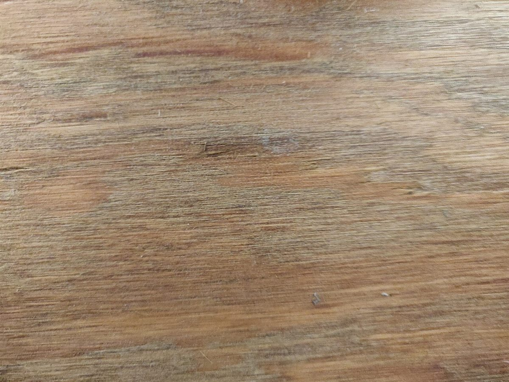

三段目
こんな声があるかもしれない
カフェという業種から自然に想像できる声を、制作側が創作したものです。
以下は制作側が考えた創作のイメージ例で、実在のお客様の投稿ではありません。実際の口コミ・評価とは関係ありません。
いつか行ってみたいお店のひとつです。まずはInstagramをのぞいて、どんなお店なのか知るところから始めてみたいと思います。
店名の「こや」という響きが気になっています。Instagramを見て、行ってみたいかどうか考えるのが楽しみです。
営業時間などが分かったら、行ってみたいです。それまでは、Instagramの更新を楽しみにしています。
